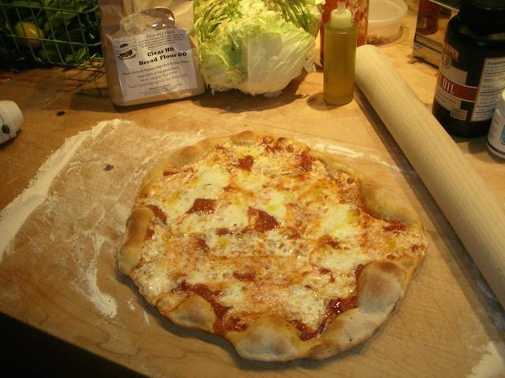

Jake Novick-Finder
Pastry Chef • Bread Baker • Ice Cream Expert
BROOKLYN, NY
Toggle navigation
ABOUT
PRESS
RECIPES
CONTACT
RESTAURANTS
Ribelle
Strip T's
Wood Fired Cheese Pizza

Ingredients
4 cups flour
2 cups warm water
1 tbs olive oil
1 tsp salt
1 cup tomato sauce
1 cup mozzarella cheese
Procedure
Mix flour, water, salt and olive oil in large mixer.
Toss the dough like a boss.
Layer with sauce and cheese
Bake in wood fired oven for like 6 minutes
Tweets by @thejakery